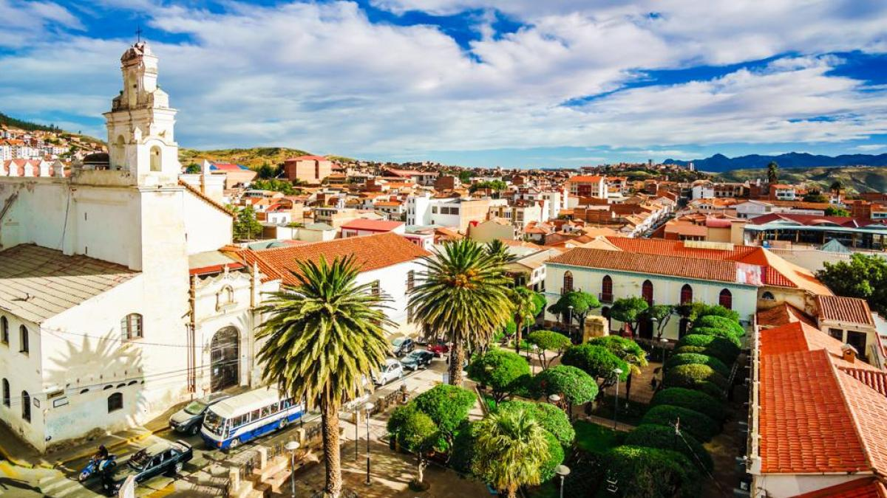
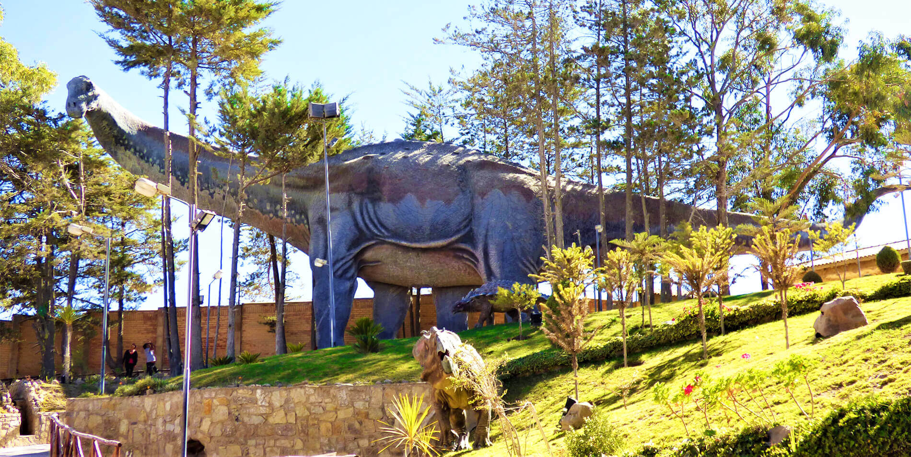

Ubicada en el centro de Bolivia, Sucre es la capital constitucional del país y un tesoro histórico lleno de vida cultural y universitaria. Su hermoso centro histórico, con sus calles empedradas y arquitectura colonial, ha sido declarado Patrimonio de la Humanidad por la UNESCO. La ciudad es un lugar donde el pasado y el presente se entrelazan, ofreciendo a los visitantes una experiencia única de la historia boliviana.
Sucre es conocida como la "Ciudad Blanca" debido a los colores claros de sus edificios coloniales. La Plaza 25 de Mayo, en el corazón de la ciudad, es un punto de encuentro vibrante rodeado de impresionantes edificios como la Catedral Metropolitana y el Palacio de la Libertad, donde se firmó la independencia de Bolivia en 1825. Esta plaza es ideal para disfrutar de un café mientras se observa la vida cotidiana de los sucrenses.
La ciudad también alberga varios museos, como el Museo de la Recoleta y el Museo Universitario Charcas, que ofrecen una profunda mirada a la historia y cultura de la región. No te pierdas la oportunidad de visitar la Casa de la Libertad, un lugar emblemático donde se declaró la independencia, que alberga importantes documentos históricos y artefactos.
Además de su riqueza cultural, Sucre es un punto de partida ideal para explorar la naturaleza circundante. A pocos kilómetros se encuentra la Cueva de Maragua, famosa por sus formaciones geológicas y sus pinturas rupestres. Este destino es perfecto para los amantes del senderismo y la aventura, ofreciendo espectaculares vistas de los valles y montañas andinas.
Las Misiones de Chiquitos, un conjunto de misiones jesuíticas, también son accesibles desde Sucre y brindan una oportunidad única para descubrir la influencia de la cultura jesuítica en la región. Estos sitios, que han sido declarados Patrimonio de la Humanidad, son reconocidos por su arquitectura barroca y su música única, con orquestas que tocan instrumentos antiguos.
La gastronomía de Sucre es otro de sus grandes atractivos. Los visitantes pueden deleitarse con platos típicos como las salteñas, empanadas rellenas que son un clásico boliviano, y el pique macho, un plato abundante de carne, salchichas y papas. Los suspiros, un dulce a base de merengue, son una delicia local que no puedes dejar de probar. La ciudad también es conocida por su producción de cerámica y artesanías, que reflejan el rico patrimonio cultural de la región.
Sucre no solo es un destino turístico, sino también un centro académico, albergando la Universidad de San Francisco Xavier, una de las más antiguas de Bolivia. Esto le da a la ciudad una atmósfera juvenil y vibrante, con una variada oferta de actividades culturales y artísticas a lo largo del año.
En resumen, Sucre es una ciudad que combina historia, cultura, naturaleza y gastronomía, ofreciendo a los visitantes una experiencia inolvidable. ¡Descubrí todo lo que podés hacer en la Región de Sucre y déjate llevar por su encanto!
Ubicada en el suroeste de Bolivia, Uyuni es famosa por su extraordinario salar, el Salar de Uyuni, el mayor desierto de sal del mundo. Este impresionante paisaje se extiende por más de 10,000 kilómetros cuadrados y ofrece una experiencia visual única, especialmente durante la temporada de lluvias, cuando el salar se convierte en un espejo gigante que refleja el cielo.
El Salar de Uyuni es el punto de partida para explorar la increíble belleza de la región. Desde aquí, los visitantes pueden aventurarse a los Ojos de Sal, formaciones naturales que emergen del salar, y descubrir el Isla Incahuasi, una isla cubierta de cactáceas gigantes que ofrece vistas panorámicas impresionantes del salar y sus alrededores.
Uyuni también es famosa por sus paisajes de montaña y volcanes, como el Volcán Tunupa, que ofrece rutas de senderismo y oportunidades para observar la flora y fauna locales. En las cercanías, el Laguna Colorada, con su inconfundible tono rojo, y el Laguna Verde, famosa por sus aguas esmeralda al pie del imponente Licancabur, son destinos imperdibles que atraen a fotógrafos y aventureros de todo el mundo.
La ciudad de Uyuni en sí es un punto de encuentro vibrante para turistas y locales. Su mercado central ofrece una variedad de productos típicos, desde textiles hasta souvenirs artesanales, que reflejan la rica cultura andina. Además, Uyuni cuenta con una serie de alojamientos, desde hostales económicos hasta hoteles de lujo, que permiten a los visitantes disfrutar de la comodidad mientras exploran la región.
La gastronomía de Uyuni es otro aspecto a destacar. Los viajeros pueden degustar platos tradicionales bolivianos como el salteña y el pique macho, así como especialidades locales que incluyen quinoa y trucha. La comida, combinada con la calidez de la gente local, crea una experiencia inolvidable para quienes visitan esta región remota.
Uyuni también es un punto de partida para tours hacia el Parque Nacional Eduardo Avaroa, un área protegida que alberga diversas especies de flora y fauna, incluyendo flamencos que habitan las lagunas. Los tours por el salar y sus alrededores suelen incluir la visita a geiseres, aguas termales y formaciones rocosas impresionantes, ofreciendo un vistazo a la diversidad geológica de la región.
En resumen, Uyuni es un destino que combina paisajes surrealistas, cultura vibrante y aventuras emocionantes. Ya sea explorando el majestuoso Salar de Uyuni, disfrutando de la gastronomía local o aventurándote por sus impresionantes lagunas y montañas, cada visita a Uyuni deja una huella imborrable. ¡Descubrí todo lo que podés hacer en la Región de Uyuni y sumérgete en su magia!
Situada en el sur de Bolivia, Tarija es conocida por su clima cálido, paisajes de ensueño y una rica tradición vitivinícola. La ciudad de Tarija, capital de la región, es un lugar encantador que combina la historia colonial con un ambiente moderno y vibrante, convirtiéndola en un destino ideal para los amantes del vino y la naturaleza.
Tarija es famosa por sus bodegas de vino, donde se producen algunas de las mejores variedades de vino del país, especialmente el vino de altura. Las visitas a bodegas como Casa Vieja y Vinos de los Andes permiten a los turistas degustar exquisitos vinos y conocer el proceso de producción, todo en un entorno idílico rodeado de viñedos y montañas.
La región es también un destino privilegiado para el ecoturismo. Los visitantes pueden explorar el Parque Nacional Tunari, donde se encuentran hermosos paisajes de montañas y valles, ideales para el senderismo y la observación de aves. Además, el Cañón de la Quebrada de los Cóndores es un lugar espectacular para los amantes de la aventura, ofreciendo rutas de trekking que brindan vistas panorámicas impresionantes.
La ciudad de Tarija cuenta con un hermoso centro histórico, donde destacan la Catedral de Tarija y la Plaza Principal, rodeada de restaurantes y cafés que invitan a disfrutar de la gastronomía local. La comida tarijeña es famosa por sus platos como el picante de pollo y el pique a lo macho, así como por sus deliciosos dulces y postres, que reflejan la riqueza cultural de la región.
Los festivales son parte integral de la vida en Tarija. Uno de los más destacados es la Fiesta de la Vendimia, que se celebra en marzo y rinde homenaje a la cosecha de uvas con degustaciones de vino, música en vivo y danzas folclóricas. Esta festividad atrae a numerosos visitantes que desean disfrutar de la cultura y la alegría de la región.
Tarija también ofrece la oportunidad de explorar sus alrededores, como el Valle de la Concepción y La Ruta del Vino, donde los turistas pueden visitar diversas bodegas y disfrutar de catas al aire libre. La calidez de la gente tarijeña y su hospitalidad hacen que cada visita sea aún más especial.
En resumen, Tarija es un destino que combina una rica tradición vitivinícola, paisajes espectaculares y una vibrante vida cultural. Ya sea explorando sus bodegas, disfrutando de la deliciosa gastronomía o aventurándose en la naturaleza, cada experiencia en Tarija es única e inolvidable. ¡Descubrí todo lo que podés hacer en la Región de Tarija y sumérgete en su encanto!